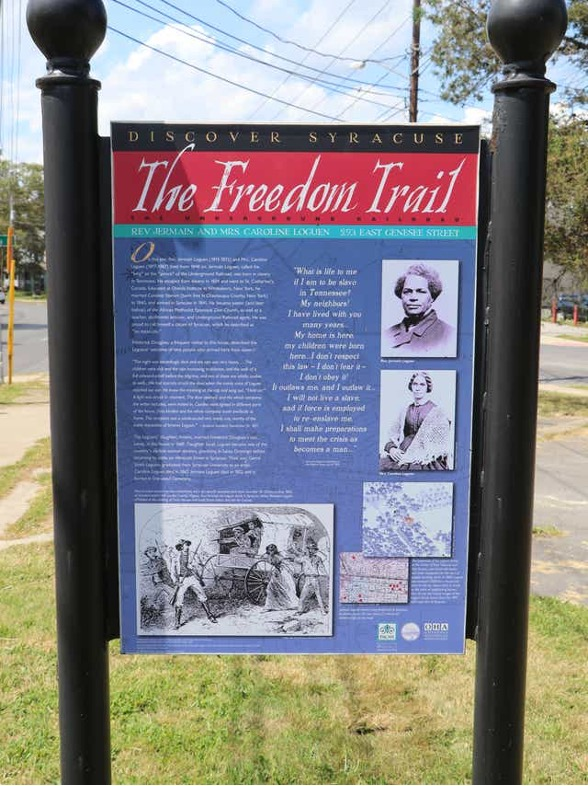
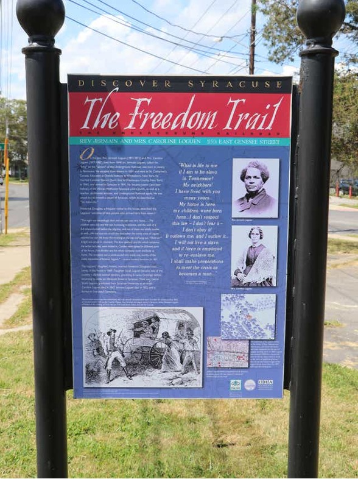

Hawley-Green Historic District and
Underground Railroad
The Story Of this Historic Neighborhood,of
"Hawley-Green District"
The Hawley-Green Historic District is a historic neighborhood in Syracuse, New York.It was a stop on the Underground Railroad,
which helped enslaved African Americans flee to freedom.Hawley Green stands as a testament to the city's historical roots, having been
established in the 1800s.
The architectural charm of the homes that line its streets tells a story of the past, showcasing a unique blend
of styles that have evolved over the decades.
Click Here To Go To The District

.jpg)
.JPG)
Jermain Wesley Loguen
Was a abolitionist, he helped over 1500
freedom seekers escaping form the south where slavery.
He escaped to Canada and then settled in New York, where he ran a school and
an Underground Railroad station. he lived in the Hawley-Green district of
Syracuse, NY and had a major impacted along with harriet tubman and
Frederick Douglas in the Hawley-Green district
 
